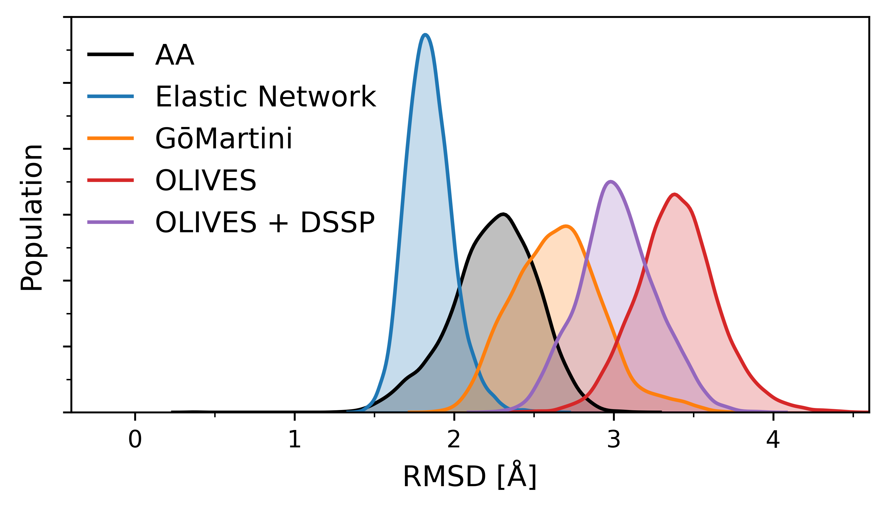

Tutorial I.II - Metrics to Compare Protein Structure Models
This tutorial is part of "Martini 3 protein models - a practical introduction to different structure bias models and their comparison".
In case of issues, please contact duve@fias.uni-frankfurt.de, luis.borges@ens-lyon.fr, or thallmair@fias.uni-frankfurt.de.
If you would like to refer to information of this tutorial, please cite T. Duve, L. Wang, L. Borges-Araújo, S. J. Marrink, P. C. T. Souza, S. Thallmair, Martini 3 Protein Models - A Practical Introduction to Different Structure Bias Models and their Comparison, bioRxiv (2025), doi: 10.1101/2025.03.17.643608.This tutorial Section discusses different different metrics that can be used to judge which protein structure model is the best suited for a specific use case.
I.II.1 Root Mean Square Fluctuation (RMSF)
The Root Mean Square Fluctuation (RMSF) is a metric that quantifies the fluctuation of the position of an atom over time. It is calculated according to the following equation, where \(r_i\) is the coordinate vector of a particle \(i\), \(\bar{r}_i\) the ensemble average coordinate vector of \(i\) and \(T\) the total number of frames in the trajectory.
\[ RMSF(i) = \sqrt{\frac{1}{T} \sum_{t=1}^{T} \left( r_i(t) - \bar{r}_i \right)^2} \]
The RMSF can be used to quantify the flexibility of a structure over the course of a simulation. Regions with high RMSF values indicate high structural mobility, while regions with low RMSF values are more rigid.
To compare the RMSF between two simulations, e.g. an atomistic reference and the CG counterpart, the ΔRMSF can be calculated with the following equation. An ideal model would have a ΔRMSF of zero for all residues.
\[ \Delta RMSF = RMSF_{CG} - RMSF_{atomistic} \]
In our case we use a script to calculate the RMSF of the C\(_α\)-atoms or backbone beads for atomistic and CG trajectories, respectively. First, the atomistic trajectories are divided into 200 ns segments, while CG trajectories are divided into 50 ns segments, following the 1:4 ratio recommended for comparisons between atomistic and CG Martini simulations, due to the smoothed energy landscape of CG simulations[34]. Subsequently, the protein is centred in the simulation box. In seven iterations, the trajectory is fitted to all C\(_α\)-atoms (atomistic) or BB beads (CG) with a mean RMSF value below the threshold of 1.5 Å in the previous iteration, using gmx trjconv with the flag -fit rot+trans. This is done to avoid fitting the trajectory to highly flexible regions of the protein. The final mean RMSF values for each residue are calculated following the seventh iteration. RMSF values are computed using gmx rmsf with the flags -nofit -res.
The RMSF of a protein is a key metric to judge the viability of a protein structure model, as it can indicate to what extent a certain model can reproduce the intrinsic flexibility of a protein. In the following Sections, we will first use it to determine the optimal parameters for the EN and GōMartini models. Then, we will compare these optimized models to the OLIVES model.
I.II.1.1 Tuning of the EN and GōMartini Models
Figure 5 depicts the ΔRMSF for the different parameters of the EN and GōMartini models. We tested three values for the force constant k\(_B\) of the EN model: 700, 800, and 1000 kJ/(mol nm\(^2\) ). Overall, only minor changes in the RMSF of the protein can be observed. As expected, a higher force constant decreases the overall flexibility of the protein and therefore the RMSF. Figure 5A shows that the higher force constants, particularly 1000 kJ/(mol nm\(^2\) ), lead to an underestimation of the flexibility of CK1δ. Therefore, we will proceed with the force constant value of 700 kJ/(mol nm\(^2\) ) in the following steps. For the GōMartini model, four values for the potential depth ε\(_{LJ}\) were tested: 8, 10, 12, and 14 kJ/mol. Figure 5B shows that the potential depth of the GōMartini model has a substantial impact on the RMSF of CK1δ. Overall, higher values for ε\(_{LJ}\) better capture the flexibility of CK1δ, both in more rigid regions, as well as in highly flexible loops. Therefore, we will proceed with a potential depth of 14 kJ/mol.
I.II.1.2 Comparison of the Structure Bias Models
When comparing the C\(_α\)/BB RMSF of different structure bias models, examine the RMSF on a per-residue basis to identify deviations in specific regions, paying attention to whether the flexibility of the more rigid regions is reproduced. Flexible regions, such as loops and termini, while important, are more challenging to reproduce. Typically, more deviation from the reference is accepted here for the overall evaluation. Figure 6 shows the RMSF distribution and RMSF for each residue in comparison to the atomistic reference simulation (as opposed to the ΔRMSF in Figure 5). This allows us to identify highly flexible and more rigid regions of CK1δ. Depending on the scientific question at hand, it might be useful to focus the analysis on certain regions of the protein, which are important for the specific system, e.g. a ligand binding pocket or a protein-protein interface.
With a mean RMSF of 0.91 Å, CK1δ is a rather rigid protein, favouring more rigid protein models, such as the EN model and GōMartini model with a high potential depth. Figure 6 shows that both the EN and GōMartini model overall capture the flexibility of CK1δ very well, especially in the more rigid regions. However, both models slightly overestimate the RMSF of residues 260-265, while underestimating the flexibility of the loop in the region 171-175. The GōMartini model shows an increased RMSF in the residues 163-171 located between two loops.
In contrast, the OLIVES model consistently overestimates the flexibility of the more rigid regions of CK1δ, but also two of the loops that are missing in the crystal structure (residues 43-46 and 217-222). The addition of DSSP secondary structure restraints resulting in the OLIVES + DSSP model reduces this overestimation and reproduces the flexibility of the rigid region between residues 50-150 and the two loops (residues 43-46 and 217-222) well. However, while improved compared to the OLIVES model, the RMSF of the rigid region between the residues 225-285 is still overestimated with the OLIVES + DSSP model. Like the GōMartini model, both models overestimate the RMSF of residues 163-171. For the OLIVES model, a scaling of the interaction strength is also possible (see Section I.I.3.4). This might improve the comparison to the atomistic reference.
To conclude, in this case both the EN and GōMartini models demonstrate strong performance in reproducing the RMSF of the atomistic reference simulation, with the EN model showing a slight edge. These models especially capture the dynamics of rigid regions most accurately. The combination of the OLIVES model and DSSP restraints provides an acceptable performance, although less precise than the EN and GōMartini models, due to an overall overestimation of the flexibility of CK1δ. The OLIVES model alone struggles to accurately reflect the RMSF of CK1δ, especially in rigid areas.
I.II.2 Root Mean Square Deviation (RMSD)
The Root Mean Square Deviation (RMSD) is a measure used to quantify structural similarity, typically between a frame of a simulation and a reference structure, such as a crystal structure. To calculate the RMSD along a trajectory, at each frame, the structure is aligned to the reference structure. Then, the RMSD is calculated according to the following equation, \(r_i(t)\) are the coordinates of particle \(i\) at frame \(t\), and \(r_i^{\mathrm{ref}}\) the coordinates of particle i in the reference structure, and N the total number of particles.
\[ RMSD(t) = \sqrt{\frac{1}{N} \sum_{i=1}^{N} \left( r_i(t) - r_i^{ref} \right)^2} \]
One might notice the similarity between this equation and the equation to calculate the RMSF (see Section I.II.1). While both metrics have a similar concept, they contain different information. The RMSD provides a global comparison, assessing overall structural deviations relative to a reference structure over time. In contrast, the RMSF is calculated relative to an averaged structure and measures the flexibility of individual residues over the course of a trajectory. While the RMSD evaluates global structure deviation, the RMSF provides insight into local dynamics and flexibility.
In our case, we calculate the RMSD of all C\(_α\)-atoms (atomistic) or BB beads (CG) along our trajectories. First, we centre the protein in the simulation box. Additionally, we create an index file that contains the indices of all C\(_α\)-atoms (atomistic) or BB beads (CG). Then we use this index file and gmx rms to calculate the RMSD. The command will prompt you to first select the index group on which to fit the trajectory, then which index group to use for the calculation of the RMSD. We select CA/BB for both.
gmx trjconv -f production.xtc -pbc whole -center -s production.tpr -o noPBC.xtc
gmx make_ndx -f equilibration.gro -o index.ndx gmx rms -f noPBC.xtc -s production.tpr -n CA.ndx -o rmsd.xvg It might be useful to also consider other selections for the RMSD calculation. For example, one could calculate the RMSD of a ligand bound to a binding pocket relative to a crystal structure, to judge the ability of a model to reproduce experimentally observed binding modes. The RMSD of the protein can also be used to judge if the system is well equilibrated. For an equilibrated system, one expects a converged RMSD time series.
I.II.2.1 The Unbiased Coarse-Grained Model
Figure 7 illustrates the need for the structure bias layer in Martini 3. While the atomistic trajectory and biased CG trajectories show RMSD values of below 4.5 Å, the unbiased model exhibits values of up to 23 Å. This corresponds to the unfolding of the protein depicted in Figure 7C, showing that the Martini 3 protein model cannot retain a tertiary structure without additional biasing.
I.II.2.2 Comparison of the Structure Bias Models

Figure 8 shows the RMSD distributions of the atomistic reference and the respective structure bias models for CK1δ. We see that the atomistic reference distribution ranges from 1.5 – 3.0 Å. The OLIVES model shows the distribution with the highest deviation from the atomistic distribution, ranging from 2.5 – 4.5 Å. In agreement with previous results, the addition of DSSP restraints to the OLIVES model leads to a decrease in the RMSD and higher agreement with the atomistic reference. The GōMartini shows even higher overlap with the atomistic reference, resulting in the best estimation of all models here, while also showing higher RMSD values up to 3.5 Å not present in the atomistic reference. The EN model shows the lowest RMSD values of all models, with values ranging from 1.5 – 2.5 Å. While the distribution overlaps with the atomistic reference distribution, the model is unable to reproduce the higher RMSD values also present in the atomistic reference. This indicates the strong biasing of the EN model towards the crystal structure that was used to create the model.
I.II.3 Backbone Distance Matrix
The final metric we are going to analyse is the distances between the backbone beads of CK1δ. Using a nested loop and gmx distance we can calculate this distance for each residue pair.
gmx distance -f noPBC.xtc -s production.tpr -select "resid ${i} ${j} and name BB" -len 4.0 -binw 0.01 -oh ${i}-${j}_BB-dist.xvg For the reference atomistic trajectory we must ensure that the distance is calculated between where the BB bead would be located, at the center of mass (COM) of the backbone atoms. Using the flag -select "resid ${i} ${j} and name N CA C O" we select all non-hydrogen atoms of the protein backbone. We then specify that the COM should be used for the calculation using -selrpos part_res_com and -seltype part_res_com.
gmx distance -f noPBC.xtc -s production.tpr -select "resid ${i} ${j} and name N CA C O" -selrpos part_res_com -seltype part_res_com -len 4.0 -binw 0.01 -oh ${i}-${j}_BB-dist.xvg This returns a histogram of distances for all residue pairs, ranging from 0 to 80 Å (specified by -len 4.0). Note that this approach generates a large number of files, so check your storage availability and delete the created files after performing the necessary calculations.
We can now calculate the mean of each histogram and plot them in a matrix. To judge the similarity of the distance distributions of a protein structure model to the atomistic reference, we can calculate the integrated absolute difference [35]. For this, we calculate the absolute difference of two histograms and sum up the values. Identical distributions then have a sum of zero, while distributions with no overlap sum up to two. Figure 9 shows both metrics for all models of CK1δ. Similarly to the analysis of the RMSF, here, the focus should be rather on rigid regions or regions of interest, such as potential ligand binding sites.
As we saw with the RMSD in Figure 7, the CG model without a structural bias shows larger distances than the atomistic reference. This is the case for all residue pairs, expect for individual pairs near the diagonal, which represents very short-range interactions mediated by the DSSP restraints. This shows that while the protein structure largely unfolds during the simulation, some secondary structure motifs remain intact.
Notably, in all models the distance pairs including the missing loop in the crystal structure (residues 171-173) show large deviations from the atomistic reference for all models. This is in line with the deviations of the RMSF in this region that was observed for all models (see Section I.II.1.2). Interestingly, all models generally displayed deviations between residues 175 and 200, although the EN and GōMartini reproduce the flexibility of this region well. A comparison between the OLIVES and OLIVES + DSSP models reveals that OLIVES + DSSP produces better agreement at distance pairs along the diagonal, corresponding to short-range interactions. This indicates a better representation of the secondary structure of CK1δ. In terms of overall distance accuracy, the GōMartini model outperforms the others, displaying the best overall fit. The highest deviations in distances are within loop regions.
The following section (I.III) will discuss how to best set up IDRs in Martini 3 proteins.